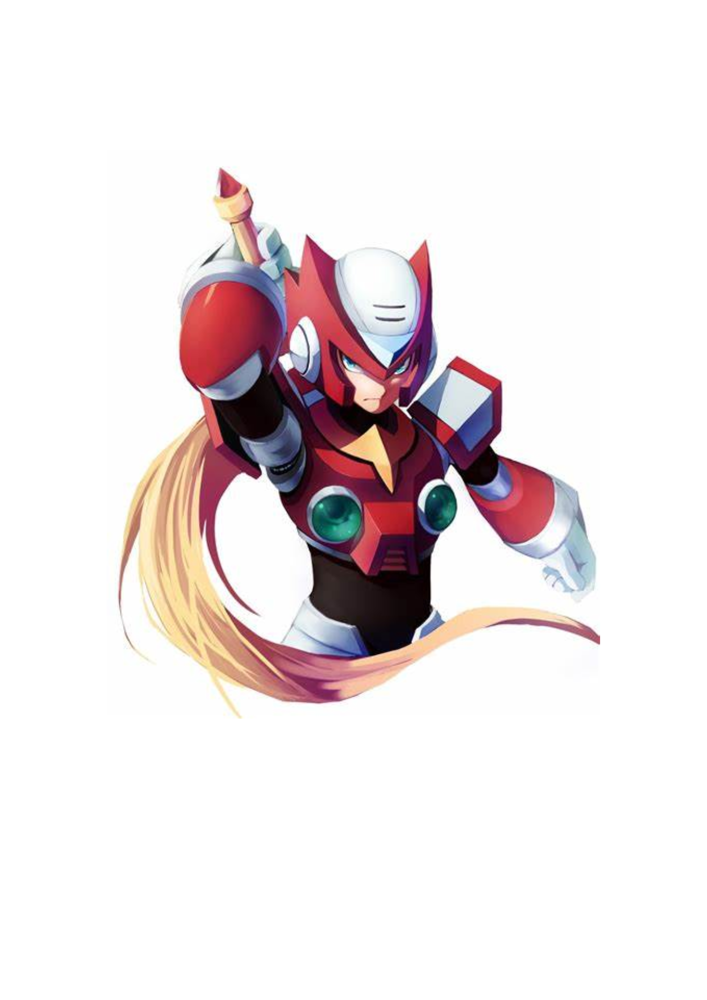

Zero
¿Cómo funciona?
- Mira el video al menos 15 segundos sin adelantar ni retroceder.
- Ver el video me ayuda a crecer en YouTube. ¡Tu apoyo es muy valioso!
No se te pedirá ningún dato personal en ningún momento. El código de esta página es público y puedes revisarlo en GitHub, así que es segura.
Zero Tech - Youtube
Debes ver al menos 300 segundos del video.
¡Felicitaciones!

Vale generado el
Código: